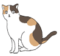
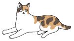
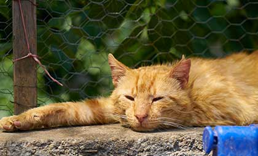
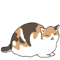
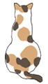

我的專屬貓間
貓咪大小事
貓奴買什麼
Action
Another action
Something else here
關於我們
聯絡我們
Previous
Next
甚麼都想找?
貓咪論壇
集結貓咪大小事情的論壇,新手爸媽必逛
寵毛網
有貓也有狗，還有部分寵物資訊，寵物商品試用...等

找食物?
寵物好事多
貓食、貓玩具、小物集結...
好味小姐
手作貓食、貓咪零食販賣
陪心寵糧
由營養師調配的寵物飼料，分小包裝配送
找紓壓?
皇阿嬤的後宮
貓咪搞笑生活影片、貓咪小知識


找領養/捐款?
社團法人台灣認養地圖協會
貓咪領養
社團法人臺北市支持流浪貓絕育計畫協會
貓咪領養
台灣之心協會
捐款給貓咪
找旅館?
城市貓旅
貓咪旅館，出國找人照護愛貓的好地方
肥貓家
位於板橋區，大又舒適的貓旅館
貓森旅
位於大安區，高級的貓旅館
找媬母?
Paws Villa
寵物褓姆尋找、或想當褓姆都可以進來